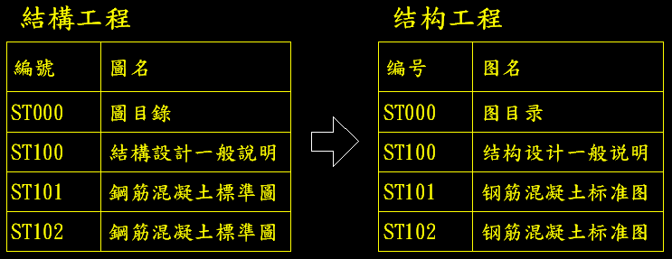

[分享]AutoCAD外掛程式 文字翻譯工具-NEW
(僅支援2013~2018版本)
https://www.autocad-tw.com/t21659-topic
*以下文章可能因為舊版不支援，可以改採以上主題新方式*
關於工程圖面中的簡繁體文字互轉，記得Autodesk官網在AutoCAD 2007版本，曾經委外開發外掛支持「簡繁體文字互轉」，但是不開放給其他版本使用，這點讓我們使用者覺得真不貼心！
現在終於找到類似的免費外掛工具，如果是同一個繁體文字編碼的DWG圖檔，透過此工具簡繁體文字互轉是可行的，但是若是簡體文字編碼的DWG圖檔，在轉換上仍然有問題，這點請大家使用上需注意，不過我想已經很不錯用，因為還可以轉成其他語系（英文），不過再轉回繁體時翻譯就會怪怪的，建議記得先將DWG原始圖檔備份保留。
這裡分享AutoCAD外掛程式，透過CoinsTranslate文字翻譯工具，可以快速「簡繁體文字互轉」，可以選取的文字類型為單行文字（DTEXT）及多行文字（MTEXT），大家趕緊來免費下載使用吧～

註：AutoCAD Exchange 外掛程式，目前僅支援2012及2013以上版本。
影片操作：